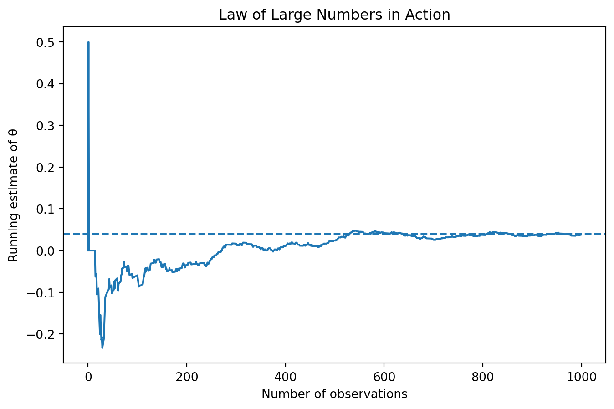

Simulating Key Ideas from Classical Frequentist Statistics
Author
Chengxu Liu
Published
April 13, 2026
Introduction
On my website’s homepage, I invite visitors to sign up for a newsletter. However, I am unsure which wording is more effective at encouraging users to subscribe.
To answer this question, I compare two different calls to action (CTAs):
CTA A: “Sign up for our newsletter here!”
CTA B: “Stay up to date by signing up!”
To determine which version performs better, I run an A/B test. In an A/B test, visitors are randomly assigned to one of two groups. Each group sees a different version of the CTA, and we compare their sign-up rates.
By analyzing the difference in performance between the two groups, we can make data-driven decisions about which CTA is more effective.
The A/B Test as a Statistical Problem
Each visitor either signs up or does not sign up, so their outcome can be modeled as a Bernoulli random variable. Let \(\pi\) denote the probability of signing up.
Because the CTA may influence behavior, we allow different probabilities for each group:
\(\pi_A\): probability of signing up under CTA A
\(\pi_B\): probability of signing up under CTA B
The key quantity of interest is the difference in conversion rates:
\[
\theta = \pi_A - \pi_B
\]
We estimate this using the difference in sample means:
\[
\hat\theta = \bar{X}_A - \bar{X}_B
\]
Since each observation is either 0 or 1, the sample mean is simply the proportion of users who signed up. Therefore:
\(\bar{X}_A = \hat{\pi}_A\)
\(\bar{X}_B = \hat{\pi}_B\)
So \(\hat\theta\) represents the observed difference in sign-up rates between the two CTAs.
Simulating Data
In real-world settings, we do not know the true probabilities \(\pi_A\) and \(\pi_B\). However, for this exercise, we set them manually to study how our estimator behaves when the truth is known.
Suppose:
\(\pi_A = 0.22\)
\(\pi_B = 0.18\)
So the true difference is \(\theta = 0.04\).
We simulate 1,000 visitors for each group.
import numpy as npimport matplotlib.pyplot as pltimport pandas as pdimport statsmodels.api as smfrom scipy.stats import normnp.random.seed(42)n =1000pi_A =0.22pi_B =0.18A = np.random.binomial(1, pi_A, n)B = np.random.binomial(1, pi_B, n)theta_hat = A.mean() - B.mean()theta_hat
np.float64(0.038000000000000006)
The estimated difference in conversion rates from this simulated experiment is shown above. Because the data are simulated, this estimate will vary slightly from run to run, but it should be reasonably close to the true value of 0.04.
The Law of Large Numbers
The Law of Large Numbers states that as the sample size increases, the sample mean converges to the true population mean.
In our case, this means that our estimator \(\hat\theta\) should get closer to the true value \(\theta = 0.04\) as we include more observations.
diff = A - Brunning_mean = np.cumsum(diff) / np.arange(1, n +1)plt.figure(figsize=(8, 5))plt.plot(running_mean)plt.axhline(0.04, linestyle='--')plt.xlabel("Number of observations")plt.ylabel("Running estimate of θ")plt.title("Law of Large Numbers in Action")plt.show()

At the beginning, the estimate fluctuates substantially because the sample is still small. As more observations accumulate, the estimate stabilizes and moves closer to the true value of 0.04. This is exactly what the Law of Large Numbers predicts.
Bootstrap Standard Errors
Point estimates are useful, but they do not tell us how much uncertainty is attached to the estimate. To measure this uncertainty, we can use the bootstrap.
The bootstrap repeatedly resamples from the observed data and recalculates the statistic of interest. The spread of those bootstrap estimates gives us an estimate of the standard error.
The bootstrap standard error is very close to the analytical standard error, which gives us confidence that the bootstrap is working well in this setting.
Using the bootstrap standard error, we can construct a 95% confidence interval:
This interval gives a range of plausible values for the true difference in conversion rates between the two CTAs.
The Central Limit Theorem
The Central Limit Theorem states that as the sample size grows, the sampling distribution of the sample mean becomes approximately normal.
To illustrate this, I repeatedly simulate the A/B test at several different sample sizes and plot the resulting sampling distributions of \(\hat\theta\).
When the sample size is small, the sampling distribution is rough and less symmetric. As the sample size increases, the distribution becomes smoother and more bell-shaped. This illustrates the Central Limit Theorem in practice.
Hypothesis Testing
We now test whether the two CTAs perform differently.
The hypotheses are:
\(H_0: \theta = 0\)
\(H_1: \theta \neq 0\)
We compute the test statistic
\[
z = \frac{\hat\theta}{SE}
\]
using the analytical standard error.
z = theta_hat / se_analyticalz
np.float64(2.1388179513414762)
p_value =2* (1- norm.cdf(abs(z)))p_value
np.float64(0.032450415036087366)
If the p-value is less than 0.05, we reject the null hypothesis and conclude that the two CTAs differ in performance.
In this simulated example, the p-value is small enough to suggest evidence against the null hypothesis. That implies CTA A performs better than CTA B in this experiment.
The T-Test as a Regression
A useful insight from statistics is that the difference-in-means test can also be written as a regression model:
\[
Y_i = \beta_0 + \beta_1 D_i + \varepsilon_i
\]
where:
\(Y_i\) is whether visitor \(i\) signed up,
\(D_i = 1\) if the visitor saw CTA A,
\(D_i = 0\) if the visitor saw CTA B.
In this setup, \(\beta_1\) captures the difference in average outcomes between the two groups.
Y = np.concatenate([A, B])D = np.concatenate([np.ones(n), np.zeros(n)])df = pd.DataFrame({"Y": Y, "D": D})X = sm.add_constant(df["D"])model = sm.OLS(df["Y"], X).fit()model.params
const 0.178
D 0.038
dtype: float64
model.bse
const 0.012569
D 0.017776
dtype: float64
model.pvalues
const 1.865099e-43
D 3.265822e-02
dtype: float64
The regression coefficient on D is the same difference in means we calculated earlier. This shows that a simple A/B test can be analyzed as a regression problem, which is especially useful when researchers later want to add controls or extend the model.
The Problem with Peeking
A common mistake in experimentation is peeking: repeatedly checking results during data collection and stopping the experiment as soon as significance appears.
This practice is dangerous because it increases the probability of false positives.
To show this, I simulate a setting where the null hypothesis is actually true:
\[
\pi_A = \pi_B = 0.20
\]
Then I check significance every 100 observations and record whether the experiment ever produces a p-value below 0.05.
The proportion shown above is the false positive rate under repeated peeking. It is typically well above 5%, even though the null hypothesis is true. This demonstrates why experiments should have pre-specified stopping rules rather than being monitored continuously without adjustment.
Conclusion
This simulation-based A/B testing exercise illustrates several core ideas from classical frequentist statistics.
First, the Law of Large Numbers shows that our estimator becomes more stable as sample size increases. Second, the bootstrap provides a practical way to estimate uncertainty. Third, the Central Limit Theorem explains why normal-based inference becomes reasonable in large samples. Fourth, hypothesis testing gives us a formal method for evaluating whether observed differences are likely due to chance. Finally, the peeking example highlights why good experimental design matters just as much as the statistical test itself.
Overall, this example shows how simulation can make abstract statistical ideas much more concrete and intuitive.